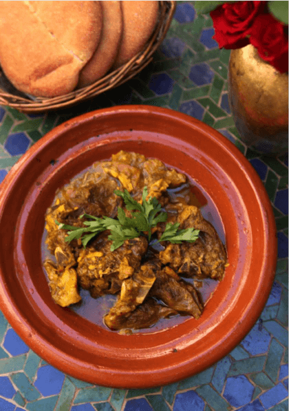

moroccan-Tangier Marrakesh
is especially popular for special occasions in Morocco, such as Ramadan and spring celebrations. Best of all, it is as easy as it is delicious! Here, we will replicate the cooking process using gentle slow cooking in a normal oven as you will have it at home.
